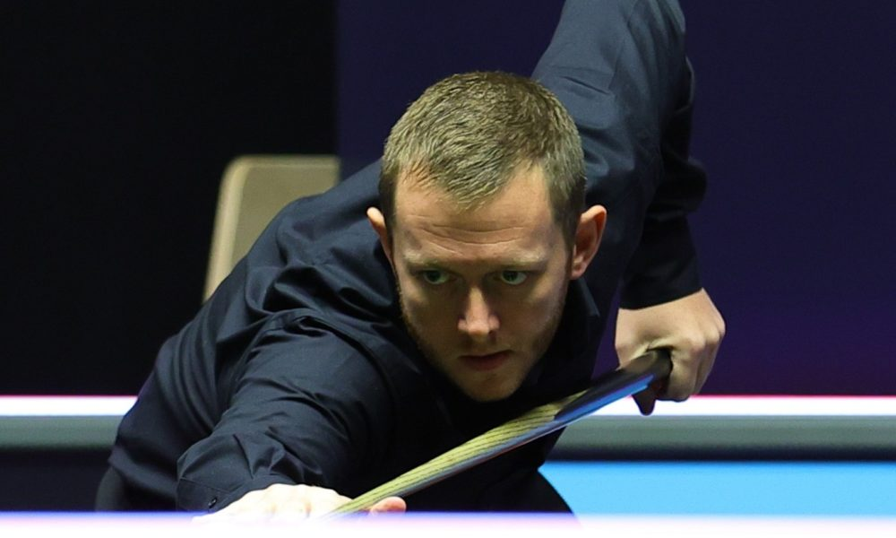
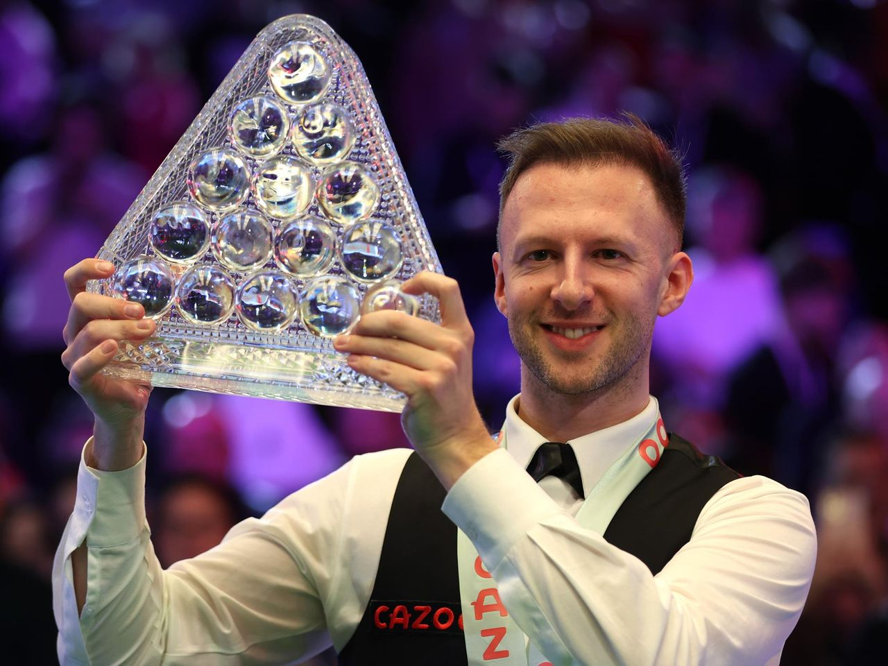
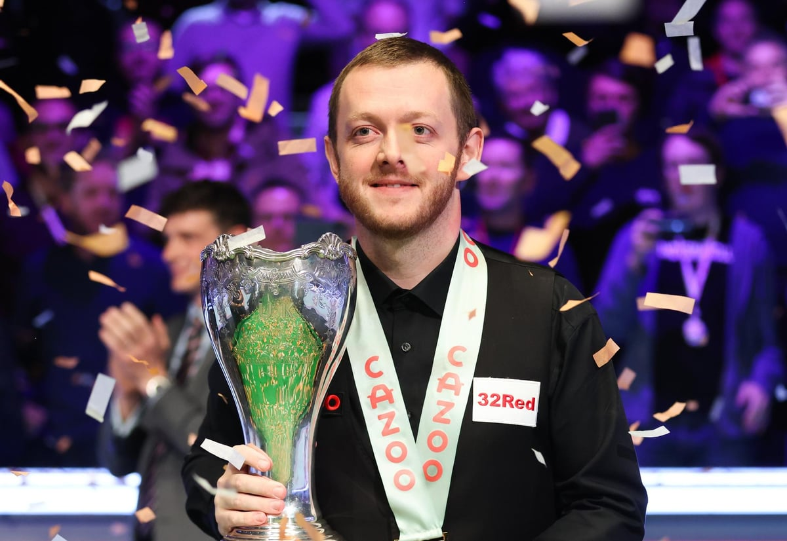

L'édition 2023 remportée par Mark Allen !
L'Irlandais est sorti victorieux de sa finale face à Judd Trump. L'Anglais croyait avoir fait le plus dur en revenant à 8-8, puis à 9-9, mais s'est finalement incliné dans la manche décisive.

Trump remporte les Masters 2023 !
Judd Trump s'est imposé 10 frames à 8 face à Mark Williams, qui l'aura pourtant mis en difficulté pendant une bonne partie du match. Une bonne nouvelle à l'horizon des Championnats du Monde 2023 ?

Mark Allen domine Ding Junhui !
L'Irlandais remporte le UK Championship en s'imposant 10 manches à 7 face à Ding Junhui. Le Chinois reste néanmoins sur un très beau parcours, après des années de galère.